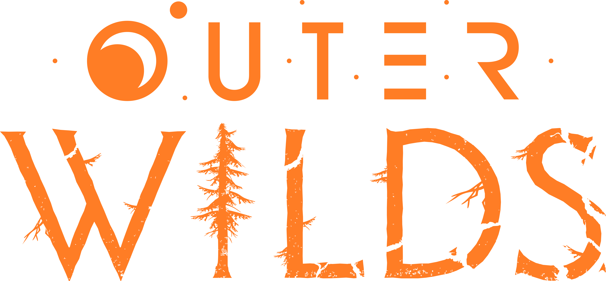

Bienvenido al Sistema Solar de Outer Wilds
donde podrás explorar libremente un universo completamente nuevo como un Hatchling.
Pero, ¿no es extraño?
El tiempo no pasa como debería...
La curiosidad es tu única herramienta y el final es solo el comienzo.
Descripción del juego...
Puntos fuertes
- Exploración no lineal
- Narrativa inmersiva
- Viajes en el tiempo dinámicos
Mecánicas de juego
- Exploración espacial con físicas realistas
- Rompecabezas ambientales
- Ciclo de tiempo de 22 minutos
El tráiler muestra la atmósfera misteriosa y el tono filosófico del juego. Cada planeta tiene secretos únicos y una historia profunda.
Preguntas Frecuentes
¿Cuánto dura una partida de Outer Wilds?
Una partida puede durar entre 15 y 25 horas, dependiendo de cuánto explores y resuelvas los misterios.
¿Necesito experiencia previa con juegos de exploración?
No, el juego está diseñado para que cualquiera pueda disfrutarlo sin necesidad de experiencia previa.
¿El juego tiene doblaje en español?
El juego no tiene doblaje en español, pero sí cuenta con subtítulos traducidos completamente.

Más sobre nosotros
ATENCIÓN: Esta página simula la campaña de microfinanciación de un videojuego ficticio y no representa un producto real. Práctica de Multimedia, 1º GDDV - Curso 24/25 (Móstoles/Quintana), URJC. La URJC no se hace responsable del contenido expuesto por el autor.